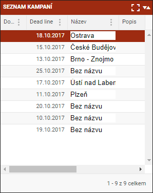

Seznam kampaní
Kampaň je soubor adres, které si plánuje uživatel navštívit v určitý den. To znamená, že do kampaně spadají jednotlivé spisy, jejichž Datum OSN je naplánovaný pro stejný den.

Každá kampaň je definována Datem OSN, kampaně se řídí procesy pro změny stavů spisů.
Název kampaně je možné zadat či kdykoliv jej měnit. Název slouží k jednodušší identifikaci kampaně.
Jakmile kampaň nebude obsahovat adresy (uživatel přesune adresy do jiných kampaní), systém tuto kampaň odstraní. Z toho je vidět. že nelze dopředu připravit, ani zanechat prázdnou kampaň.